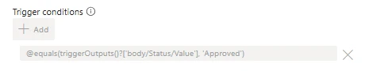
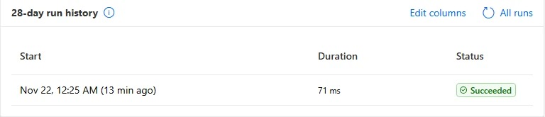
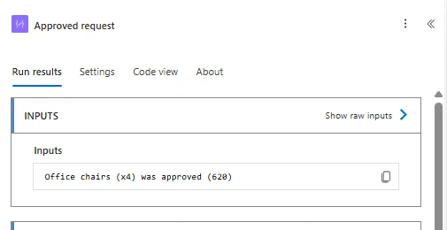

- Power Automate
- Level 3 · Triggers and connectors · 3 of 7
Trigger conditions
A created or modified trigger fires for every change: a typo fix, a new comment, a status change. Usually you care about one kind of change. A trigger condition stops the others before the run even starts.
Trigger condition vs Condition action
WhatAn expression in the trigger's settings that must be true for the flow to start.
WhyA Condition action still creates a run (and uses an action) every time. A trigger condition means no run at all.
DemoRun only when a request's Status becomes Approved.
The same rule, two places
Condition action
Item changes → run starts
Status = Approved?
No → run ends, but it counted
Trigger condition
Status = Approved?
Yes → run starts; no → nothing happens
The condition

@equals(triggerOutputs()?['body/Status/Value'], 'Approved')| Piece | What it does |
|---|---|
@ | Required at the start of every trigger condition. |
triggerOutputs()?['body/Status/Value'] | The changed item's Choice value. |
equals(..., 'Approved') | True only for Approved. |
Four changes, one run
What each change did
| Change | Status | Condition | Run? |
|---|---|---|---|
| Office chairs (x4) | Approved | true | ran |
| Conference room screen | Rejected | false | no run |
| New request 1 | New | false | no run |
| New request 2 | New | false | no run |


More useful conditions
| Run only when | Trigger condition |
|---|---|
| Amount is over 1,000 | @greater(triggerOutputs()?['body/Amount'], 1000) |
| A field isn't empty | @not(empty(triggerOutputs()?['body/Department'])) |
| Not changed by the flow's own account | @not(equals(triggerOutputs()?['body/Editor/Email'], 'flow.account@contoso.com')) |
| Both of two rules (AND) | Two separate condition lines |
| Either rule (OR) | @or(equals(…), equals(…)) on one line |
Watch out
- Every condition line must start with
@and return true or false. - Several lines are combined with AND.
- Skipped changes leave no trace in run history. Test conditions on a copy first.
- Trigger conditions can't tell what a field was; for “changed to” logic see Trigger loops and column changes (Level 8).
New to this? Start from the basics optional
triggerOutputs(): the data the trigger received. body/… holds the item's fields.
Common mistakes
- Forgetting the
@. - Writing a condition that's never true, so the flow silently never runs.
- Reading a Choice column without
/Value.